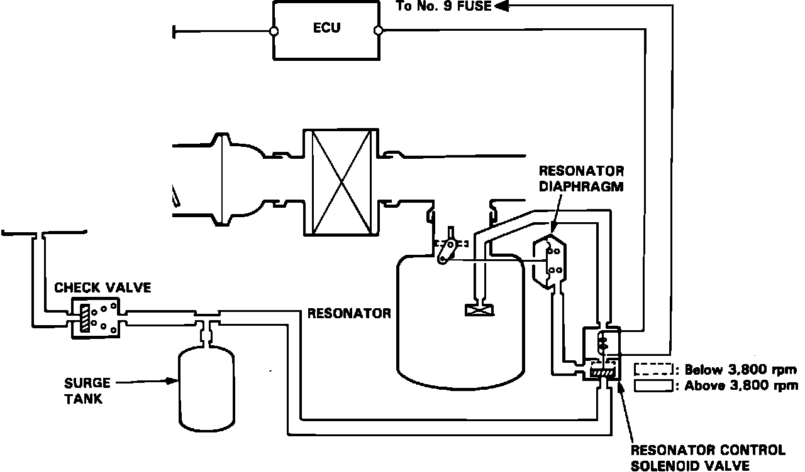

Exhaust Resonator
Resonator Control System:

The resonator reduces air intake noise. It is located below the air intake tube at the left front of the engine.
When engine speed is below 3800 RPM, the ECU applies current to the resonator control solenoid valve which applies vacuum to the resonator diaphragm. With vacuum applied, the resonator diaphragm closes access to the resonator chamber. When engine speed exceeds 3800 RPM, the resonator control solenoid valve closes and the resonator chamber opens to intake air.